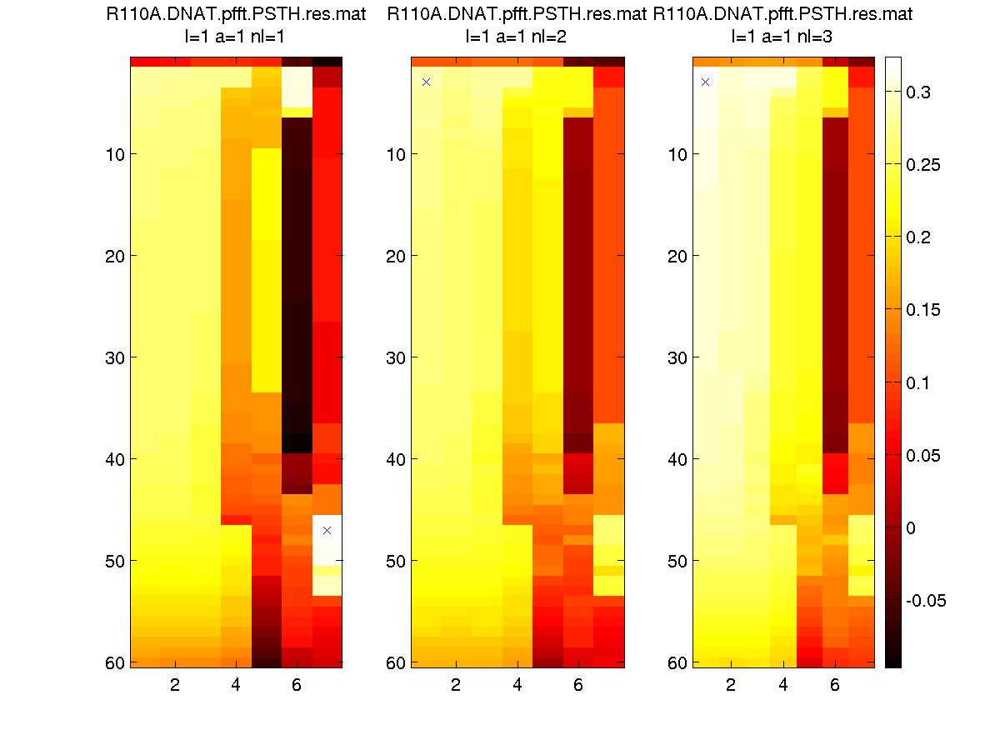
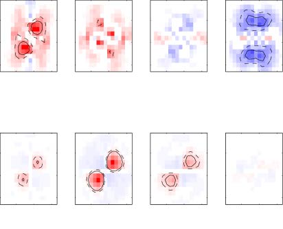
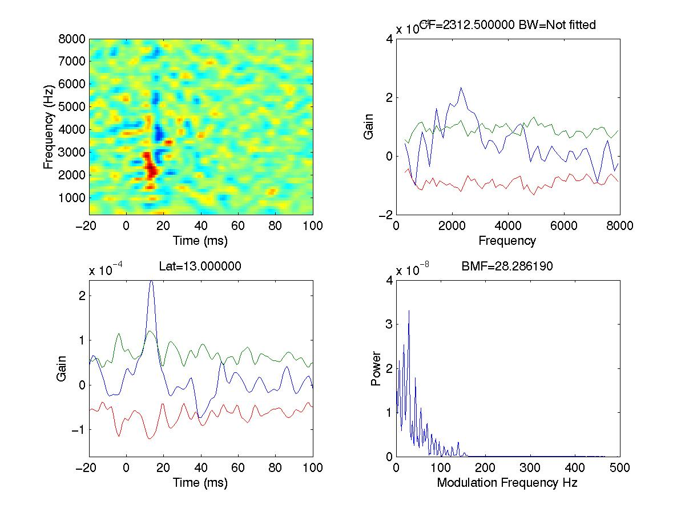
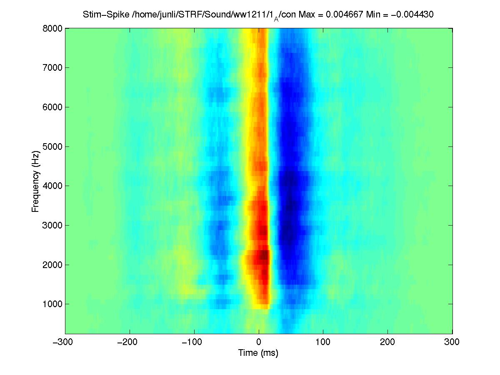

|  |  |  |  |
| The spatio-temporal receptive fields (STRFs) software applies the generalized reverse-correlation technique to estimate the STRFs of sensory neurons from their responses to arbitrary stimuli such as auditory vocalizations or natural visual scenes. |
|
Overview Documentation Source Code |
Software Demo What's New? Staff |